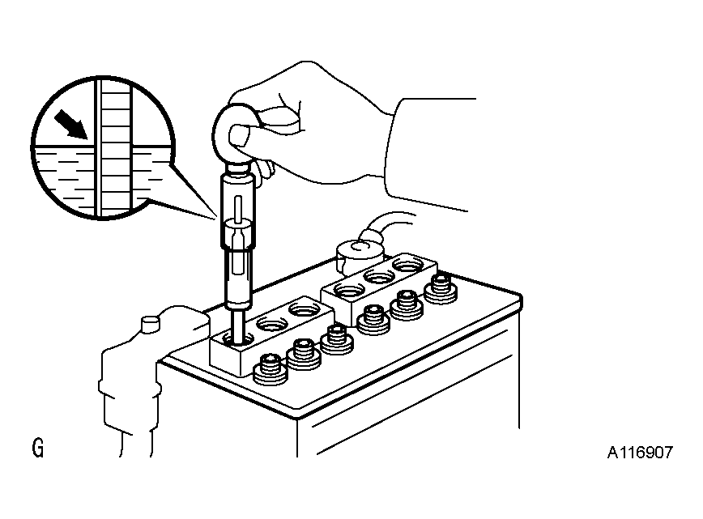
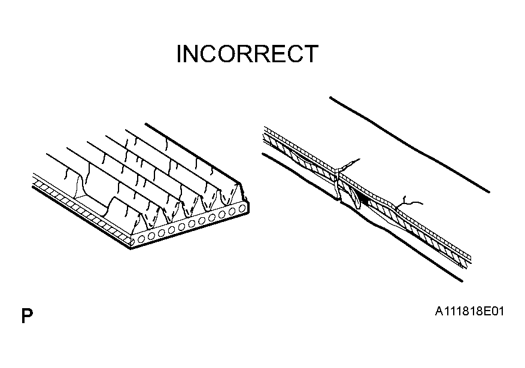
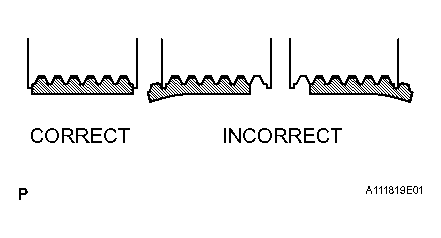

On-Vehicle Inspection
- CHECK BATTERY CONDITION NOTE: If the battery is weak or if the engine is difficult to start, perform the following procedures.
- Check the battery for damage and deformation. If severe damage, deformation or leakage is found, replace the battery.
- Check the electrolyte quantity of each cell.
- For maintenance-free batteries:
- If the electrolyte quantity is below the lower line, replace the battery.
- If the electrolyte quantity is above the lower line, check the battery voltage when cranking the engine. If the voltage is less than 9.6 V, recharge or replace the battery.
HINT:
Before checking the battery voltage, turn off all the electrical systems (headlights, blower motor, rear defogger, etc.).
- For non-maintenance-free batteries:
- If the electrolyte quantity is below the lower line, add distilled water to each cell. Then, recharge the battery and check the electrolyte's specific gravity.

Courtesy of © TOYOTA, LICENSE AGREEMENT TMS1002Standard specific gravity: 1.25 to 1.29 at 20°C (68°F)
- If the electrolyte quantity is above the lower line, check the battery voltage when cranking the engine. If the voltage is less than 9.6 V, recharge or replace the battery.
HINT:
Before checking the battery voltage, turn off all the electrical systems (headlights, blower motor, rear defogger, etc.).
- If the electrolyte quantity is below the lower line, add distilled water to each cell. Then, recharge the battery and check the electrolyte's specific gravity.
- For maintenance-free batteries:
- CHECK BATTERY TERMINALS AND FUSES
- Check that the battery terminals are not loose or corroded.
If the terminals are corroded, clean the terminals.
- Measure the resistance of the H-fuse and fuses.
Standard resistance: Below 1 Ω
If the results are not as specified, replace the fuses as necessary.
- Check that the battery terminals are not loose or corroded.
- CHECK V-RIBBED BELT
- Check the belt for wear, cracks and other signs of damage.

Courtesy of © TOYOTA, LICENSE AGREEMENT TMS1002If any defect is found, replace the drive belt.
HINT:
Replace the drive belt, if the following defects are found:
- The belt is worn out and wire is exposed.
- The cracks reach the wire in more than one place.
- The belt has chunks missing from the ribs.
- Check that the belt fits properly in the ribbed grooves.

Courtesy of © TOYOTA, LICENSE AGREEMENT TMS1002HINT:
With your hand, confirm that the belt has not slipped out of the grooves on the bottom of the pulley.
- Check the belt for wear, cracks and other signs of damage.
- VISUALLY CHECK GENERATOR WIRING
- Check that the wiring is in good condition.
- LISTEN FOR ABNORMAL NOISE FROM GENERATOR
- Check that the generator does not emit any abnormal noise while the engine is running.
- CHECK CHARGE WARNING LIGHT CIRCUIT
- Turn the ignition switch ON. Check that the charge warning light turns on.
- Start the engine and check that the light turns off. If the light does not operate as specified, troubleshoot the charge warning light circuit.
- CHECK CHARGING CIRCUIT WITHOUT LOAD
- Connect a voltmeter and ammeter to the charging circuit as follows.
HINT:
If a battery/generator tester is available, connect the tester to the charging circuit according to the manufacturer's instructions.
- Disconnect the wire from terminal B of the generator and connect it to the negative (-) lead of the ammeter.
- Connect the ammeter's positive (+) lead to terminal B of the generator.
- Connect the voltmeter's positive (+) lead to positive (+) terminal B of the battery.
- Ground the voltmeter's negative (-) lead.
- Check the charging circuit.
- Keep the engine speed at 2,000 rpm. Check the reading on the ammeter and voltmeter.
Standard amperage: 10 A or less
Standard voltage: 12.9 to 14.9 V
If the voltmeter reading is more than the standard voltage, replace the voltage regulator. If the voltmeter reading is less than the standard voltage, check the voltage regulator and generator.
- Keep the engine speed at 2,000 rpm. Check the reading on the ammeter and voltmeter.
- Connect a voltmeter and ammeter to the charging circuit as follows.
- CHECK CHARGING CIRCUIT WITH LOAD
- With the engine running at 2,000 rpm, turn on the high beam headlights and turn the heater blower switch to the HI position.
- Check the reading on the ammeter.
Standard amperage: 30 A or more
If the ammeter reading is less than the standard amperage, repair the generator. If the battery is fully charged, the indication will sometimes be less than the standard amperage.